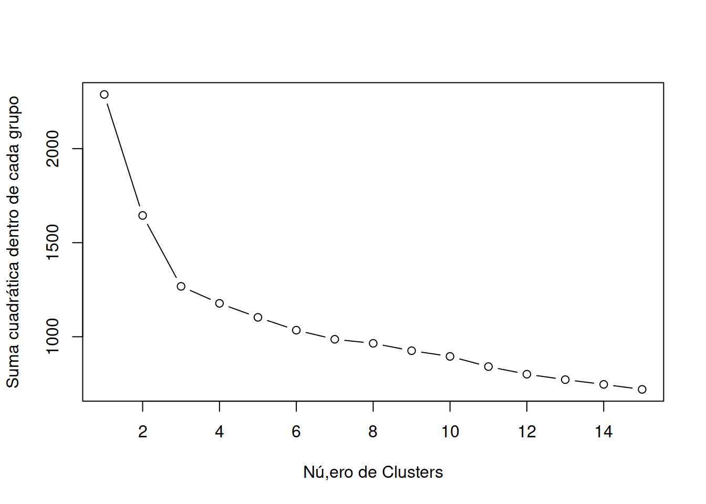
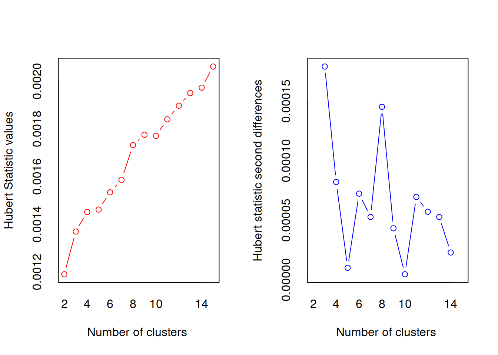
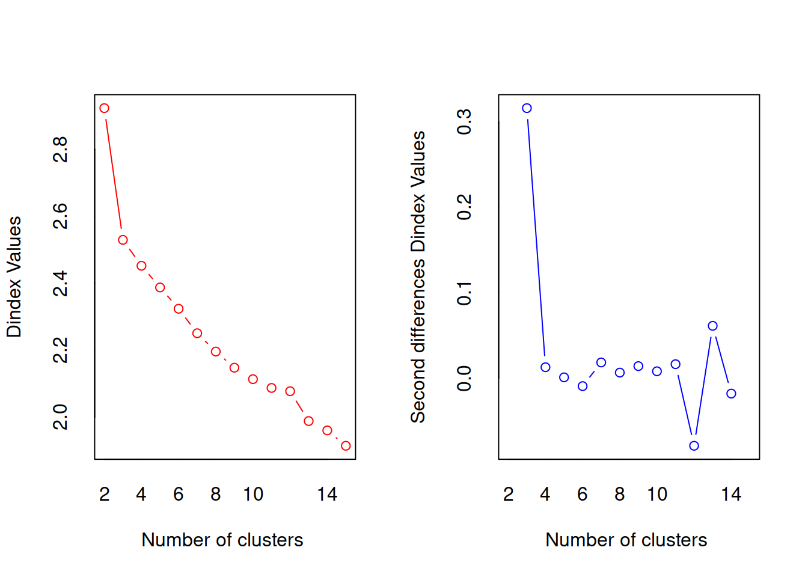
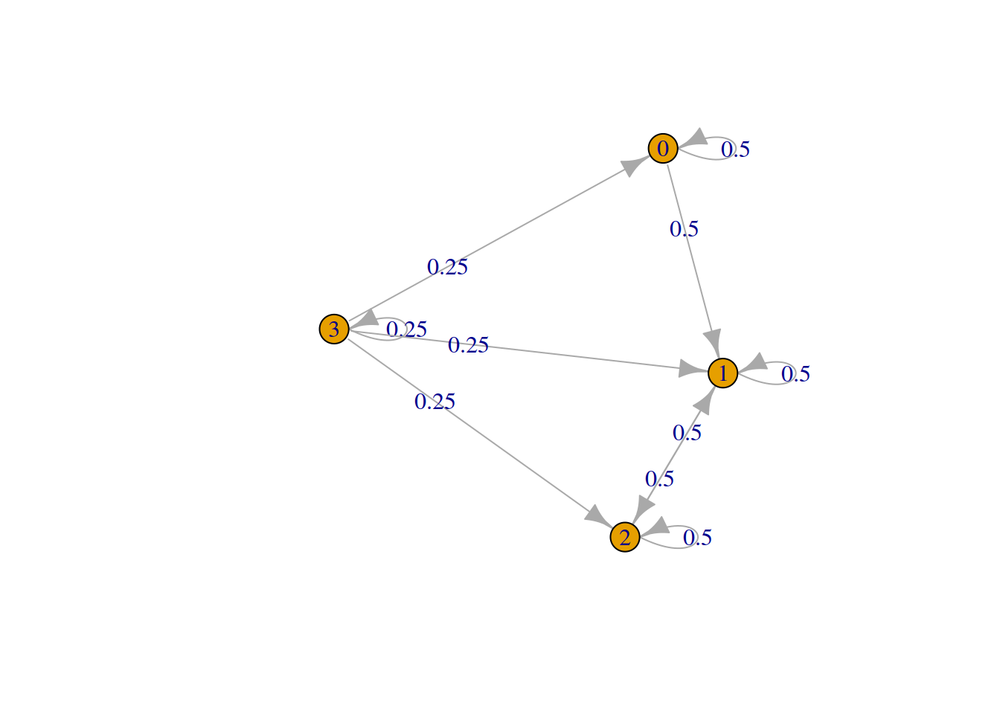

Capítulo 4 Tipología y Topología de los Problemas de Localización
- Problemas de localización de una instancia (caso de localización de un reabastecimiento en una linea férrea)
- Casos de un abastecimiento en norma 2 y 3.
- El ejemplo de localización de la batería de un satélite.
- Problemas de localización de múltiples instancias.
- Estrategias de ruteo para reabastecer y costos logísticos individual y colectivo con algoritmos geneticos y evolutivos.
- Casos de localización y tamaño de clientes móviles (servicio de transporte público).
- Casos de localización de redes eléctricas y generadores compensadores (turbinas de gas) en redes urbanas.
- Localización con instancias “desagradables” y “agradables”.
- Problemas tipo: NIMBY (not in my back yard), NIMNBY (not in my neighbor’s back yard). NIABY (not in anyone’s back yard).
4.1 Ejemplo de ruteo
Descarga el archivo ruteo_imposible.csv y guárdalo en una carpeta facil de recordar (jeemplo c:/datos)
https://themys.sid.uncu.edu.ar/rpalma/R-cran/Siria/ruteo_imposible.csv
Revisaremos el contenido del archivo con el comando View() o usando el menú de R-Cran.
library(readr)
ruteo_imposible <-read_delim("https://themys.sid.uncu.edu.ar/rpalma/R-cran/Siria/ruteo_imposible.csv",
";", escape_double = FALSE, trim_ws = TRUE)## Warning: Missing column names filled in: 'X1' [1]##
## ── Column specification ────────────────────────────────────────────────────────
## cols(
## X1 = col_character(),
## Hyatt = col_character(),
## Intercontinental = col_number(),
## `Raices Aconcagua` = col_character(),
## `Huentala/Sheraton` = col_character(),
## Bohemia = col_number(),
## `H Argentino` = col_character(),
## `Casa Glebinias` = col_character(),
## `Lares de Chacras` = col_character(),
## `Posada Verde Oliva` = col_number(),
## Esplendor = col_number(),
## `Club Tapiz` = col_number(),
## `Finca Adalgisa` = col_character(),
## `Portal Suites` = col_character(),
## Garage = col_character()
## )Este archivo pertenece a un emprendimiento exitoso de unos alumnos que ofrece a pasajeros de hoteles recorridos por las bodegas utilizando buses de pasajeros que tienen recorridos que por contrato deben ser cubiertos, pero tienen baja demanda en determinados horarios.
A efectos de hacer más simple el análisis tomaremos un conjunto reducido que involucra los hoteles y los destinos hasta totalizar 14.
Tomaremos la fila 1 a 14 y las columnas 2 a 15 (eliminamos una columna que tienen el número de dato o registro que no nos es útil)
Cada celda tiene el costo asociado que implica desplazarse desde una fila a una columna.
Como queremos evitar que se tomen tramos en los que la tura sale desde un hotel y termina en el mismo hotel, la diagonal principal tiene un costo ficticio extremadamente elevado. Esto evita que el algoritmo lo tome.
distancia <- ruteo_imposible[1:14,2:15]
distancia## # A tibble: 14 x 14
## Hyatt Intercontinental `Raices Aconcagua` `Huentala/Sheraton` Bohemia
## <chr> <dbl> <chr> <chr> <dbl>
## 1 9999 56 1,3 1,3 15
## 2 5,6 9999 4,7 4,5 71
## 3 1,3 47 9999 1 17
## 4 1,3 45 1 9999 15
## 5 1,5 71 1,7 2,3 9999
## 6 0,5 65 0,9 1,3 14
## 7 17,3 193 17 17,4 161
## 8 14,8 173 14 14,8 134
## 9 15 102 15 15 155
## 10 16,4 151 15,9 16,7 164
## 11 18,4 172 18,4 18,4 185
## 12 17 171 16,6 17 156
## 13 0,5 57 0,9 0,5 22
## 14 0,5 58 1,5 1,5 17
## # … with 9 more variables: H Argentino <chr>, Casa Glebinias <chr>,
## # Lares de Chacras <chr>, Posada Verde Oliva <dbl>, Esplendor <dbl>,
## # Club Tapiz <dbl>, Finca Adalgisa <chr>, Portal Suites <chr>, Garage <chr>4.2 Matriz de asignacion
Construiremos una matriz de asignación en la que si aparece un uno en cierta celda, esto implica que usaremos un tramo de la ruta que va desde la fila hasta la columna.
De este modo si la fila 4 tiene un uno en la columna 8, esto implica que la ruta utilizará una salida desde el Hotel Hayatt hasta la Bodega Esplendor.
Esto que estamos construyendo en realidad representa una solución posible al pobrlema, pero no es la que tiene costos mínimo.
asigna <- matrix (0, nrow = 14 , ncol = 14)
for (i in 1:14) {
for (j in 1:14) {
ifelse(i==j, asigna[i,j] <- 1, asigna[i,j] <-0)
}
}Del mismo modo crearemos una matriz de distancias numérica
distancia_m <- data.matrix(distancia)4.3 Cálculo del costo
mat_costo <- distancia_m * asigna
costo <- 0
for (i in 1:14) {
for (j in 1:14) {
costo <- costo + mat_costo [i,j]
}
}
costo## Hyatt
## 50104De este modo hemos encontrado una secuencia de tramos que van desde cada instancia hacia el nodo que está adyacente en la mztriz. No se trata de un costo mínimo, sino de un caso de ruteo probable. (diagonal principal llena de unos)
La secuencia de ruteo se puede expresear matemáticamente como
\[ S [ 1,2,3,4, ... ,12,13,14]\]
4.4 Asignación combinatoria
Trabajaremos con un set de 9 destinos para acelerar los cálculos
Dejaremos como ejercicio el trabajo de realizar los cálculos con los 14 destinos para resolver en clase.
Comezaremos generando una nueva matriz de asignación vacía
asigna <- matrix (0, nrow = 14 , ncol = 14)
for (i in 1:14) {
for (j in 1:14) {
asigna[i,j] <- 0
}
}4.5 Generación de combinaciones
Vamos a construir una colección de secuencias que en lugar se ser la secuencia la que utilizamos en el caso anterior sean todas las posibles permutaciones de 9 elementos tomados de a nueve. Es claro que si analizamos todas estas posibles combinaciones encontraremos dentro de ellas la que corresponde al costo mínimo.
library(gtools)
permutaciones <- permutations(9, 9, set = TRUE, repeats.allowed = FALSE)
# hemos generado las permutaciones sin repeticiónA efectos de no poner lenta la generación del apunto utilizaremos una muestra de permutaciones y calcularemos el costo en la matriz de asignación
poblacion <- nrow(permutaciones)
poblacion## [1] 362880muestra <- sample(seq(1,poblacion),50, replace=FALSE)
muestra## [1] 50129 225698 343509 98077 184710 115969 215095 221438 232055 128528
## [11] 332105 160981 77525 45933 267902 185285 361614 242321 108462 83060
## [21] 225145 1974 354323 104864 362109 42719 53968 319792 47519 187045
## [31] 87612 189089 66214 324871 168693 346756 235782 296215 250995 109266
## [41] 63440 21547 355201 81297 263073 275407 267956 347627 32730 265713Calculo de costos
Recuperaremos los vectores seleccionados en la muestra
p <- permutaciones[muestra, ]
p## [,1] [,2] [,3] [,4] [,5] [,6] [,7] [,8] [,9]
## [1,] 2 3 9 6 7 5 8 1 4
## [2,] 6 5 8 3 9 1 2 7 4
## [3,] 9 5 2 1 6 8 4 3 7
## [4,] 3 5 6 2 4 8 1 7 9
## [5,] 5 6 7 4 2 1 9 8 3
## [6,] 3 9 1 2 6 4 5 7 8
## [7,] 6 3 7 8 4 2 1 5 9
## [8,] 6 4 9 5 2 7 1 8 3
## [9,] 6 8 1 3 7 9 5 2 4
## [10,] 4 2 6 7 1 5 3 9 8
## [11,] 9 2 8 3 5 6 7 1 4
## [12,] 4 9 8 5 3 6 1 2 7
## [13,] 2 9 4 7 1 3 8 5 6
## [14,] 2 3 1 8 7 9 5 4 6
## [15,] 7 6 2 1 5 8 3 9 4
## [16,] 5 6 8 3 1 2 9 4 7
## [17,] 9 8 6 2 4 1 7 5 3
## [18,] 7 1 2 6 4 8 9 3 5
## [19,] 3 7 5 6 9 1 8 4 2
## [20,] 3 1 6 5 2 9 4 8 7
## [21,] 6 5 7 8 2 1 3 4 9
## [22,] 1 2 5 8 6 3 9 7 4
## [23,] 9 7 3 1 6 4 8 2 5
## [24,] 3 6 8 5 9 2 1 7 4
## [25,] 9 8 6 7 3 5 2 1 4
## [26,] 2 1 6 4 9 8 7 3 5
## [27,] 2 4 7 9 6 5 3 8 1
## [28,] 8 9 4 1 7 5 3 6 2
## [29,] 2 3 5 9 8 7 6 1 4
## [30,] 5 7 1 8 6 4 2 3 9
## [31,] 3 2 5 8 1 6 9 7 4
## [32,] 5 7 4 6 8 3 9 1 2
## [33,] 2 7 1 9 6 8 4 5 3
## [34,] 9 1 5 3 4 6 2 7 8
## [35,] 5 2 6 3 8 9 4 1 7
## [36,] 9 5 7 4 6 1 3 8 2
## [37,] 6 8 7 3 9 1 5 4 2
## [38,] 8 3 7 4 5 2 1 6 9
## [39,] 7 2 8 5 6 1 4 3 9
## [40,] 3 7 6 8 4 5 9 2 1
## [41,] 2 6 7 1 8 4 3 9 5
## [42,] 1 6 3 9 5 8 2 4 7
## [43,] 9 7 4 3 1 2 5 6 8
## [44,] 3 1 2 9 6 5 7 4 8
## [45,] 7 5 2 4 3 6 8 1 9
## [46,] 7 8 5 4 1 3 2 6 9
## [47,] 7 6 2 1 9 8 3 5 4
## [48,] 9 5 8 6 7 2 4 1 3
## [49,] 1 8 5 4 7 6 9 3 2
## [50,] 7 5 8 1 3 4 6 2 94.6 Construcción de las matrices de asignacón para calcular los costos
En esta parte utilizaremos cada vector de secuencia p (vector de rutas) tomado como costos el valor asociado a cada columna del vector p con el valor de p_i
4.7 Creacion de la matriz asigna
asigna <- matrix(0, ncol(p),ncol(p))
distancia_9 <- matrix(distancia_m[1:9,1:9],nrow=9,byrow = TRUE)
costo_muestra <-matrix (0, ncol(p))
for (i in 1:ncol(p))
{
vec <- p[i, ]
for (j in 1:ncol(p))
{
asigna[vec[j],j] <-1
}
print(asigna)
mat_costo <- distancia_9 * asigna
costo <- 0
for (k in 1:9) {
for (l in 1:9) {
costo <- costo + mat_costo [k,l]
}
costo_muestra[i] <- costo
}
asigna <- matrix(0, ncol(p),ncol(p))
costo <- 0
} ## [,1] [,2] [,3] [,4] [,5] [,6] [,7] [,8] [,9]
## [1,] 0 0 0 0 0 0 0 1 0
## [2,] 1 0 0 0 0 0 0 0 0
## [3,] 0 1 0 0 0 0 0 0 0
## [4,] 0 0 0 0 0 0 0 0 1
## [5,] 0 0 0 0 0 1 0 0 0
## [6,] 0 0 0 1 0 0 0 0 0
## [7,] 0 0 0 0 1 0 0 0 0
## [8,] 0 0 0 0 0 0 1 0 0
## [9,] 0 0 1 0 0 0 0 0 0
## [,1] [,2] [,3] [,4] [,5] [,6] [,7] [,8] [,9]
## [1,] 0 0 0 0 0 1 0 0 0
## [2,] 0 0 0 0 0 0 1 0 0
## [3,] 0 0 0 1 0 0 0 0 0
## [4,] 0 0 0 0 0 0 0 0 1
## [5,] 0 1 0 0 0 0 0 0 0
## [6,] 1 0 0 0 0 0 0 0 0
## [7,] 0 0 0 0 0 0 0 1 0
## [8,] 0 0 1 0 0 0 0 0 0
## [9,] 0 0 0 0 1 0 0 0 0
## [,1] [,2] [,3] [,4] [,5] [,6] [,7] [,8] [,9]
## [1,] 0 0 0 1 0 0 0 0 0
## [2,] 0 0 1 0 0 0 0 0 0
## [3,] 0 0 0 0 0 0 0 1 0
## [4,] 0 0 0 0 0 0 1 0 0
## [5,] 0 1 0 0 0 0 0 0 0
## [6,] 0 0 0 0 1 0 0 0 0
## [7,] 0 0 0 0 0 0 0 0 1
## [8,] 0 0 0 0 0 1 0 0 0
## [9,] 1 0 0 0 0 0 0 0 0
## [,1] [,2] [,3] [,4] [,5] [,6] [,7] [,8] [,9]
## [1,] 0 0 0 0 0 0 1 0 0
## [2,] 0 0 0 1 0 0 0 0 0
## [3,] 1 0 0 0 0 0 0 0 0
## [4,] 0 0 0 0 1 0 0 0 0
## [5,] 0 1 0 0 0 0 0 0 0
## [6,] 0 0 1 0 0 0 0 0 0
## [7,] 0 0 0 0 0 0 0 1 0
## [8,] 0 0 0 0 0 1 0 0 0
## [9,] 0 0 0 0 0 0 0 0 1
## [,1] [,2] [,3] [,4] [,5] [,6] [,7] [,8] [,9]
## [1,] 0 0 0 0 0 1 0 0 0
## [2,] 0 0 0 0 1 0 0 0 0
## [3,] 0 0 0 0 0 0 0 0 1
## [4,] 0 0 0 1 0 0 0 0 0
## [5,] 1 0 0 0 0 0 0 0 0
## [6,] 0 1 0 0 0 0 0 0 0
## [7,] 0 0 1 0 0 0 0 0 0
## [8,] 0 0 0 0 0 0 0 1 0
## [9,] 0 0 0 0 0 0 1 0 0
## [,1] [,2] [,3] [,4] [,5] [,6] [,7] [,8] [,9]
## [1,] 0 0 1 0 0 0 0 0 0
## [2,] 0 0 0 1 0 0 0 0 0
## [3,] 1 0 0 0 0 0 0 0 0
## [4,] 0 0 0 0 0 1 0 0 0
## [5,] 0 0 0 0 0 0 1 0 0
## [6,] 0 0 0 0 1 0 0 0 0
## [7,] 0 0 0 0 0 0 0 1 0
## [8,] 0 0 0 0 0 0 0 0 1
## [9,] 0 1 0 0 0 0 0 0 0
## [,1] [,2] [,3] [,4] [,5] [,6] [,7] [,8] [,9]
## [1,] 0 0 0 0 0 0 1 0 0
## [2,] 0 0 0 0 0 1 0 0 0
## [3,] 0 1 0 0 0 0 0 0 0
## [4,] 0 0 0 0 1 0 0 0 0
## [5,] 0 0 0 0 0 0 0 1 0
## [6,] 1 0 0 0 0 0 0 0 0
## [7,] 0 0 1 0 0 0 0 0 0
## [8,] 0 0 0 1 0 0 0 0 0
## [9,] 0 0 0 0 0 0 0 0 1
## [,1] [,2] [,3] [,4] [,5] [,6] [,7] [,8] [,9]
## [1,] 0 0 0 0 0 0 1 0 0
## [2,] 0 0 0 0 1 0 0 0 0
## [3,] 0 0 0 0 0 0 0 0 1
## [4,] 0 1 0 0 0 0 0 0 0
## [5,] 0 0 0 1 0 0 0 0 0
## [6,] 1 0 0 0 0 0 0 0 0
## [7,] 0 0 0 0 0 1 0 0 0
## [8,] 0 0 0 0 0 0 0 1 0
## [9,] 0 0 1 0 0 0 0 0 0
## [,1] [,2] [,3] [,4] [,5] [,6] [,7] [,8] [,9]
## [1,] 0 0 1 0 0 0 0 0 0
## [2,] 0 0 0 0 0 0 0 1 0
## [3,] 0 0 0 1 0 0 0 0 0
## [4,] 0 0 0 0 0 0 0 0 1
## [5,] 0 0 0 0 0 0 1 0 0
## [6,] 1 0 0 0 0 0 0 0 0
## [7,] 0 0 0 0 1 0 0 0 0
## [8,] 0 1 0 0 0 0 0 0 0
## [9,] 0 0 0 0 0 1 0 0 04.8 Calculo del costo de cada muestra
4.8.1 Cuál ruta tiene el costo mínimo ?
muestra_optima <- which.min(costo_muestra)
muestra_optima## [1] 14.9 Ruta óptima
p[muestra_optima, ]## [1] 2 3 9 6 7 5 8 1 44.10 Costo mínimo asociado
costo_muestra [muestra_optima]## [1] 1144.11 Ejemplos de Agrupamientos por centroides (Kmeans)
En el enfoque de partición de R, las observaciones se dividen en grupos K y se reorganizan para formar los grupos más cohesivos posibles de acuerdo con un criterio dado. Hay dos métodos: K-medias y partición alrededor de mediodos PAM. En este artículo, basado en el capítulo 16 de R in Action, Second Edition, el autor Rob Kabacoff analiza la agrupación de K-means.

R In Action por Robert Kabacoff
PAM es por lejos el más comunmente utilizado, pero existen otros como CLARA, MELISSA, y otros tantos que se adaptan a diferentes problemas. En el caso de la localización de las baterías de satélites como el ARSAT e incluso de los nano satélites como el FossaSat-1 (cubesat) este método es muy utilizado. Ver Satelites para internet de las cosas Industriales SE han utilizado varios metodos de la paquete exitosamente para problemas de congestion de puertos y misiones de vacunación post covid de el paquete : ClusteR
4.11.1 Agrupación K-means
El método de partición más común es el análisis de clúster de K-means. Conceptualmente, el algoritmo K-means:
- Selecciona K centroides (K filas elegidas al azar)
- Asigna cada punto de datos a su centroide más cercano
- Recalcula los centroides como el promedio de todos los puntos de datos en un clúster (es decir, los centroides son vectores medios de p-longitud, donde p es el número de variables)
- Asigna puntos de datos a sus centroides más cercanos
- Continúa los pasos 3 y 4 hasta que no se reasignen las observaciones o se alcance el número máximo de iteraciones (R usa 10 como valor predeterminado).
Los detalles de implementación de este enfoque pueden variar. R utiliza un algoritmo eficiente de Hartigan y Wong (1979) que divide las observaciones en grupos k de tal manera que la suma de cuadrados de las observaciones a sus centros de clúster asignados es un mínimo. Esto significa que en los pasos 2 y 4, cada observación se asigna al clúster con el valor más pequeño de:
\[ SS_{(k)}= \sum_{i=1}^n \sum_{j=1}^p( x_{ij}- \bar{x_{kj}}) ²\] Donde \(k\) es un cluster, \(x_{ij}\) es el valor de la variable \(j ésima\) para la observación \(iésima\), y \(\bar{x}_{kj}\) es la media de la variable j_{p} para el cluster k_i .
La agrupación en clústeres K-means puede manejar conjuntos de datos más grandes que los enfoques de clúster jerárquicos. Además, las observaciones no se comprometen permanentemente a un grupo. Se mueven cuando al hacerlo mejora la solución general. Sin embargo, el uso de medioides implica que todas las variables deben ser continuas y el enfoque puede verse gravemente afectado por valores atípicos. Por ejemplo k-means no es aplicable para localización de pallets en sistemas de posición flotante si dentro del edificio hay muros o barreras que impiden la circulación entre racks.
También se desempeñan mal en presencia de grupos no convexos (por ejemplo, en forma de U o celdas de manufactura flexible). El formato de la función K-means en R es:
\[kmeans(x, centros)\] donde \(x\) es un conjunto de datos numéricos (matriz o data.frame) y \(centros\) es el número de clústeres a extraer. Es un parámetro arbitrario que elijo y con el que pruebo o simulo alternativas. Por su bajo costo computacional converge razonablemente bien a una solución.
La función devuelve la pertenencia de casos al clúster, los centroides, las sumas de cuadrados (dentro, entre y total) y los tamaños de cada clúster.
Dado que el análisis de clústeres de K-medias comienza con k centroides elegidos al azar, se puede obtener una solución diferente cada vez que se invoca la función. Utilice la función set.seed() para garantizar que los resultados sean reproducibles, en especial si publicas en papers. Además, este enfoque de agrupación puede ser sensible a la selección inicial de centroides. La función \(kmeans()\) tiene una opción o parámetro \(nstart\) que intenta varias configuraciones iniciales e informa sobre la mejor. Por ejemplo, agregando \(nstart=25\) generará 25 configuraciones iniciales. Este enfoque a menudo muy recomendable. A diferencia de la agrupación jerárquica, la agrupación en clústeres de K-means requiere que el número de clústeres que se extraer se especifique de antemano. Una vez más, el paquete NbClust se puede utilizar como guía para estimar un número inicial de clusters acpetable. Además, puede ser útil un gráfico de las sumas totales de cuadrados dentro de los grupos contra el número de clústeres en una solución de K-means. Una curva en el gráfico puede sugerirnos el número apropiado de clústeres.
El gráfico se puede producir mediante la siguiente función.
A efectos de sostener un estilo único en los gráficos amenudo conviene crear una función de ploteo en la que repito los parámetros.
wssplot <- function(data, nc=15, seed=1234){
wss <- (nrow(data)-1)*sum(apply(data,2,var))
for (i in 2:nc){
set.seed(seed)
wss[i] <- sum(kmeans(data, centers=i)$withinss)}
plot(1:nc, wss, type="b", xlab="Nú,ero de Clusters",
ylab="Suma cuadrática dentro de cada grupo")}El parámetro de datos es el conjunto de datos numéricos que se analizará, \(nc\) es el número máximo de grupos a considerar y la semilla es una semilla de número aleatorio. Aquí, se analiza un conjunto de datos que contiene 13 mediciones químicas en 178 muestras de vino italiano. Los datos provienen originalmente del Repositorio de Aprendizaje Automático de la UCI (http://www.ics.uci.edu/~mlearn/MLRepository.html), pero también se pueden acceder a ellos a través del paquete de rattle. En el listado se proporciona un análisis de conglomerado de K-means para los datos.
library(readr)
wine <- read_csv("http://archive.ics.uci.edu/ml/machine-learning-databases/wine/wine.data")##
## ── Column specification ────────────────────────────────────────────────────────
## cols(
## `1` = col_double(),
## `14.23` = col_double(),
## `1.71` = col_double(),
## `2.43` = col_double(),
## `15.6` = col_double(),
## `127` = col_double(),
## `2.8` = col_double(),
## `3.06` = col_double(),
## `.28` = col_double(),
## `2.29` = col_double(),
## `5.64` = col_double(),
## `1.04` = col_double(),
## `3.92` = col_double(),
## `1065` = col_double()
## )Dimensiones:
| columna | Propiedad |
|---|---|
| 1) | Alcohol |
| 2) | Ácido Malico |
| 3) | Cenizas |
| 4) | Alcalinidad de las cenizas |
| 5) | Magnecio |
| 6) | Fenoles Totales |
| 7) | Flavonoides |
| 8) | Fenoles no flavonoides |
| 9) | Proantocianinas |
| 10) | Intensidad de Color |
| 11) | Tinte |
| 12) | OD280/OD315 de vinos diluídos |
| 13) | Prolina |
nombres <- list( "Type",
"Alcohol",
"Ácido Malico",
"Cenizas",
"Alcalinidad de las cenizas" ,
"Magnecio",
"Fenoles Totales",
"Flavonoides" ,
"Fenoles no flavonoides",
"Proantocianinas" ,
"Intensidad de Color",
"Tinte",
"OD280/OD315 de vinos diluídos",
"Prolina" )
colnames(wine) <- nombresGeneraremos un reporte exploratorio automático con la biblioteca skim
library(skimr)
skim(wine)| Name | wine |
| Number of rows | 177 |
| Number of columns | 14 |
| _______________________ | |
| Column type frequency: | |
| numeric | 14 |
| ________________________ | |
| Group variables | None |
Variable type: numeric
| skim_variable | n_missing | complete_rate | mean | sd | p0 | p25 | p50 | p75 | p100 | hist |
|---|---|---|---|---|---|---|---|---|---|---|
| Type | 0 | 1 | 1.94 | 0.77 | 1.00 | 1.00 | 2.00 | 3.00 | 3.00 | ▆▁▇▁▆ |
| Alcohol | 0 | 1 | 12.99 | 0.81 | 11.03 | 12.36 | 13.05 | 13.67 | 14.83 | ▂▇▇▇▃ |
| Ácido Malico | 0 | 1 | 2.34 | 1.12 | 0.74 | 1.60 | 1.87 | 3.10 | 5.80 | ▇▅▂▂▁ |
| Cenizas | 0 | 1 | 2.37 | 0.28 | 1.36 | 2.21 | 2.36 | 2.56 | 3.23 | ▁▂▇▅▁ |
| Alcalinidad de las cenizas | 0 | 1 | 19.52 | 3.34 | 10.60 | 17.20 | 19.50 | 21.50 | 30.00 | ▁▆▇▃▁ |
| Magnecio | 0 | 1 | 99.59 | 14.17 | 70.00 | 88.00 | 98.00 | 107.00 | 162.00 | ▅▇▃▁▁ |
| Fenoles Totales | 0 | 1 | 2.29 | 0.63 | 0.98 | 1.74 | 2.35 | 2.80 | 3.88 | ▅▇▇▇▁ |
| Flavonoides | 0 | 1 | 2.02 | 1.00 | 0.34 | 1.20 | 2.13 | 2.86 | 5.08 | ▆▆▇▂▁ |
| Fenoles no flavonoides | 0 | 1 | 0.36 | 0.12 | 0.13 | 0.27 | 0.34 | 0.44 | 0.66 | ▃▇▅▃▂ |
| Proantocianinas | 0 | 1 | 1.59 | 0.57 | 0.41 | 1.25 | 1.55 | 1.95 | 3.58 | ▃▇▆▂▁ |
| Intensidad de Color | 0 | 1 | 5.05 | 2.32 | 1.28 | 3.21 | 4.68 | 6.20 | 13.00 | ▇▇▃▂▁ |
| Tinte | 0 | 1 | 0.96 | 0.23 | 0.48 | 0.78 | 0.96 | 1.12 | 1.71 | ▅▇▇▃▁ |
| OD280/OD315 de vinos diluídos | 0 | 1 | 2.60 | 0.71 | 1.27 | 1.93 | 2.78 | 3.17 | 4.00 | ▆▃▆▇▂ |
| Prolina | 0 | 1 | 745.10 | 314.88 | 278.00 | 500.00 | 672.00 | 985.00 | 1680.00 | ▇▇▅▃▁ |
df <- scale(wine[-1])
wssplot(df) 
library(NbClust)
set.seed(1234)
nc <- NbClust(df, min.nc=2, max.nc=15, method="kmeans")
## *** : The Hubert index is a graphical method of determining the number of clusters.
## In the plot of Hubert index, we seek a significant knee that corresponds to a
## significant increase of the value of the measure i.e the significant peak in Hubert
## index second differences plot.
## 
## *** : The D index is a graphical method of determining the number of clusters.
## In the plot of D index, we seek a significant knee (the significant peak in Dindex
## second differences plot) that corresponds to a significant increase of the value of
## the measure.
##
## *******************************************************************
## * Among all indices:
## * 1 proposed 2 as the best number of clusters
## * 19 proposed 3 as the best number of clusters
## * 1 proposed 9 as the best number of clusters
## * 2 proposed 15 as the best number of clusters
##
## ***** Conclusion *****
##
## * According to the majority rule, the best number of clusters is 3
##
##
## *******************************************************************table(nc$Best.n[1,])##
## 0 1 2 3 9 15
## 2 1 1 19 1 2Dado que las variables varían en rango, se estandarizan antes de la agrupación (función \(scale()\)). A continuación, el número de clústeres se determina mediante las funciones wwsplot() y \(NbClust()\) . La Figura indica que hay una clara caída en la suma de cuadrados dentro de los grupos cuando se pasa de 1 a 3 grupos. Después de tres clústeres, esta disminución disminuye, lo que sugiere que una solución de 3 clústeres puede ser una buena opción para los datos.
En la siguiente figura, 14 de los 24 criterios proporcionados por el paquete \(NbClust\) sugieren una solución de 3 clústeres.
Tenga en cuenta que no se pueden calcular los 30 criterios para cada conjunto de datos. Se obtiene una solución final de clúster con la función kmeans() y se imprimen los centroides de clúster.
Dado que los centroides proporcionados por la función se basan en datos estandarizados, la función \(aggregate()\) se utiliza junto con las pertenencias al clúster para determinar las medias variables para cada clúster en la métrica original (o desescalando).
barplot(table(nc$Best.n[1,]),
xlab="Numer of Clusters", ylab="Number of Criteria",
main="Number of Clusters Chosen by 26 Criteria")
¿Cuantas muestras hay en cada grupo?
set.seed(1234)
fit.km <- kmeans(df, 3, nstart=25) #3
fit.km$size## [1] 61 65 51Dónde estan los centroides?
fit.km$centers ## Alcohol Ácido Malico Cenizas Alcalinidad de las cenizas Magnecio
## 1 0.8333649 -0.3013131 0.3661731 -0.6065538 0.56922228
## 2 -0.9183253 -0.3953334 -0.4905017 0.1637039 -0.48321576
## 3 0.1736447 0.8642504 0.1871775 0.5168437 -0.06497127
## Fenoles Totales Flavonoides Fenoles no flavonoides Proantocianinas
## 1 0.88768039 0.98016451 -0.56173008 0.57583669
## 2 -0.07114136 0.02658937 -0.03709561 0.06509498
## 3 -0.97106500 -1.20624204 0.71915195 -0.77171004
## Intensidad de Color Tinte OD280/OD315 de vinos diluídos Prolina
## 1 0.1702296 0.4753467 0.7753334 1.1296451
## 2 -0.8955790 0.4614076 0.2823571 -0.7460740
## 3 0.9378162 -1.1566204 -1.2872265 -0.4002655Matriz de confusión
ct.km <- table(wine$Type, fit.km$cluster)
ct.km ##
## 1 2 3
## 1 58 0 0
## 2 3 65 3
## 3 0 0 48